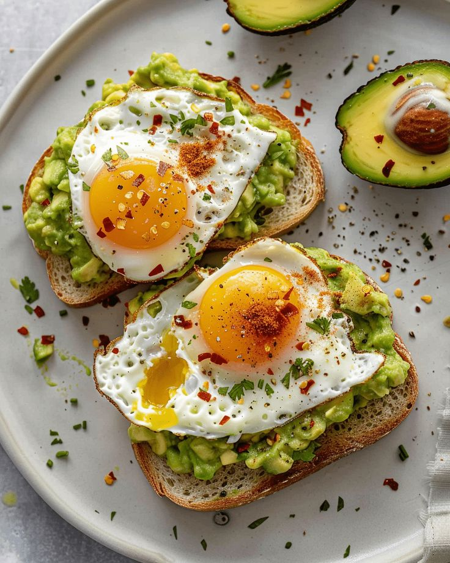

Avocado Toast Recipe

Description
Avocado toast is a simple and healthy dish made with toasted bread topped with mashed ripe avocado. It’s lightly seasoned with salt and pepper and can be customized with eggs, tomatoes, or herbs. This quick meal is perfect for breakfast or a light snack.
Ingredients
- Bread (any type)
- Ripe avocado
- Salt
- Black pepper
- Olive oil or butter
- Eggs or tomatoes (optional toppings)
Steps
- Toast the bread until golden and crisp.
- Mash the avocado in a bowl and season with salt and pepper.
- Spread the avocado onto the toast and add optional toppings if desired.
- Serve immediately while warm.
Home